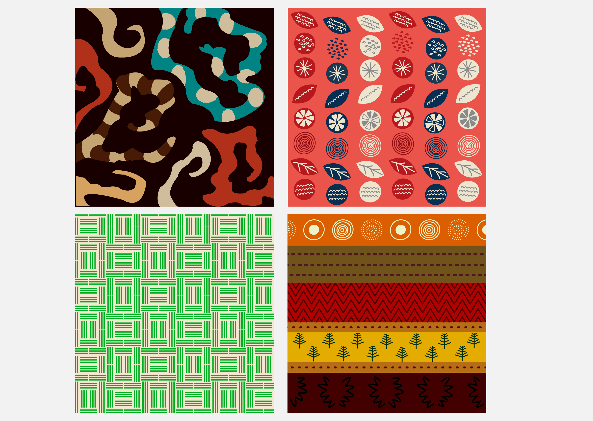
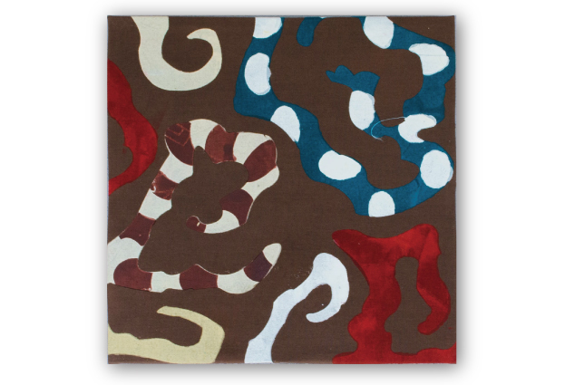
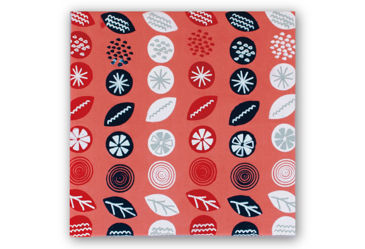
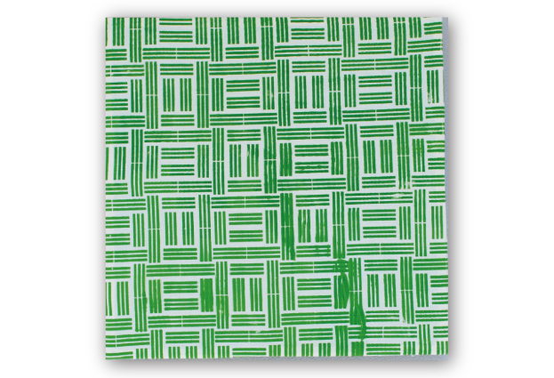
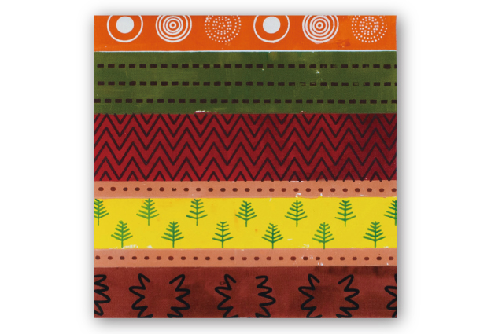

「ここちよさ」をテーマにそれぞれのお茶にゆかりのある国のデザインを取り入れたテキスタイルボードです。
◴ 2020/5/6-2020/7/10
✎ Illustrator 染め シルクスクリーン

コーヒー×エチオピア
世界初のコーヒが生まれたという内容のカルディの伝説からヤギの角やコーヒーの実の形を取り入れました。
紅茶×イギリス
ベルガモットのポップな模様をイギリスのユニオンジャックカラー３色で表現しました。
緑茶×日本
茶室に使われる畳を敷き詰めた空間を表現しました。１畳１畳に伝統的な和柄三崩しを取り入れました。
ルイボスティー×南アフリカ共和国
太陽の照り続ける乾燥地帯で黒人たちの手によって力強く育つルイボスの木など、お茶ができる過程を表現しました。